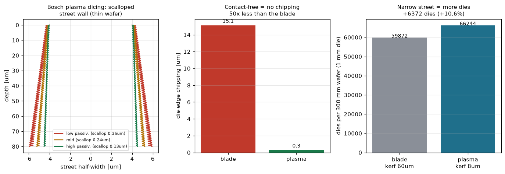
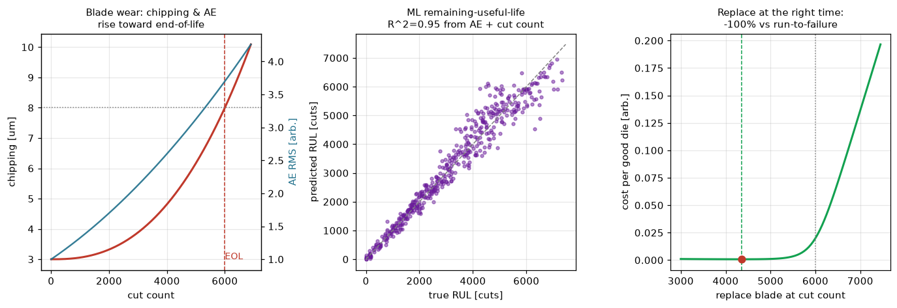

切る・削る・磨くの世界最大手が向かう2方向を数値化：プラズマ（Bosch）ダイシングは刃を使わず街路をエッチして個片化——非接触ゆえチッピングレス、狭い切りしろで薄い/脆いウェハに強い。そしてブレードの予知保全デジタルツインは、摩耗物理＋音響（AE）＋ML残存寿命＋交換タイミング最適化を1つに束ね、消耗品ビジネスの核心「いつ替えると一番得か」を答える。
Boschプロセスはエッチとパッシベーションを交互に繰り返し、街路の側壁にスキャロップ（波状痕）を残す：パッシベーション量で振幅0.35→0.13µm、側壁は垂直に近づく。ブレードは破壊で削るのでチッピングが送り速度・砥粒で増えるが、プラズマは化学的に除去するのでダイエッジ欠けはほぼゼロ（1/50）——薄い（<100µm）・脆い（SiC/GaN）ウェハで刃が割ってしまう領域が、まさにプラズマの主戦場。さらに狭い街路（8µm）は広いブレード切りしろ（欠けよけ込みで60µm）よりダイが取れる：1mmダイで+6,372個（+10.6%）。切りしろと欠けが、そのまま歩留まりと単価になる。

ブレードは消耗品ビジネスの核心で、替え時が金額そのもの：早すぎれば良品ブレードを捨て、遅すぎれば欠けでダイを廃棄する。3つを1つのツインに統合——(1)摩耗物理：切断数とともにチッピングが超線形に増え、スペック（8µm）を超える切断数がEOL。(2)音響（AE）：鈍った刃はAE信号が上昇（センサノイズ込み）——実機が持つ唯一の観測量。(3)ML残存寿命：ランダムフォレストが（AE, 切断数）→残存寿命を学習、ホールドアウトR²=0.95。仕上げは交換タイミングのコスト最適化：ブレード償却＋欠け廃棄のコスト/良品ダイはU字を描き、最適点は約4,350切断——早すぎ・遅すぎ両方より安い。走行破壊（run-to-failure）に対しては桁違いに得。研究のベイズ計算・不確かさ定量化と同じ「少ないデータで賢く判断する」思想の、消耗品への応用。

関連（実装済み）：レーザー溝入れ・ステルス・KABRA・AE異常検知・能動学習ADC・HBM積層。出所：disco/{plasma_dicing, blade_rul}.py。